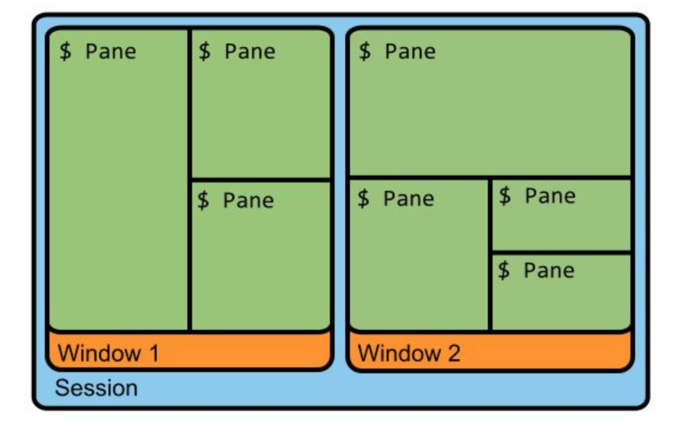
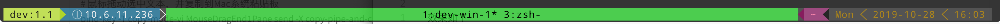

此为记录tmux指令以及快捷键的笔记，不包含如何安装
笔记来源
概念
tmux采用C/S模型构建，输入tmux命令就相当于开启了一个服务器，此时默认将新建一个会话（session），然后会话中默认新建一个窗口（window），窗口中默认新建一个面板（pane），所以，彻底退出tmux的话所有的session就全没了

- 会话(session): 建立一个 tmux 工作区会话，会话可以长期驻留，重新连接服务器不会丢失，我们只需重新 tmux attach 到之前的工作区就可以恢复会话
- 窗口(window): 容纳多个窗格
- 窗格(pane): 可以在窗口中分成多个窗格
说明
本笔记使用的tmux版本为2.9，操作系统为MacOS10.15，仿真终端为iTerm2，配置文件在 ~/.tmux.conf
tmux指令输入途径有如下几种 (以下不明确写出则为快捷键)
- 非tmux默认以tmux开始
- 快捷键默认以 ctrl-b 开始
- 指令模式默认以
ctrl-b+:开始
可以修改默认起始快捷键（此处修改为ctrl-a）
1 | # 修改完成更新配置 |
Session
创建session
- 新建一个无名称的会话：
tmux - 新建一个名称为demo的会话：
tmux new -s demo - 指令模式：
new -s demo - 快捷键：未知
重命名session
- 快捷键：
$ - 指令模式：
rename-session [-t current-name] [new-name]
离开session
tmux detach- 指令模式：
detach - 快捷键：
d - 快捷键：
D选择要断开的对话
列出所有session
tmux lstmux list-session- 指令模式：
ls - 快捷键模式（同时可以选择切换）：
s或w（这个也会列出session中的所有的window）
进入session
tmux a -t <session-name>- 指令模式：
attach -t <session-name>
杀死session
- 杀死一个session：
tmux kill-session -t demo - 杀死全部session：
tmux kill-server
Window
- 创建新窗口：
c - 关闭窗口：
& - 修改窗口信息
- 名字：
, - 顺序：
.
- 名字：
- 打开窗口列表切换窗口：
w - 其他切换切换
- 按照编号切换：
0-9 - 设置从1开始：
set -g base-index 1 - 切换到上一窗口：
p - 切换到下一窗口：
n - 快速定位：
f
- 按照编号切换：
Pane
创建面板
- 上下一分为二：
" - 左右一分为二：
%
移动面板
- 将面板在新窗口打开：
! - 向前置换当前面板：
{ - 向后置换当前面板：
} - 顺时针旋转当前窗口中的所有面板：
Ctrl+o - 在自带的面板布局中循环切换：
空格键
选择面板
- 当前窗口面板：
q - 所有session所有window中的面板：
w - 移动光标切换面板：
方向键 - 选择下一面板：
o
其他
- 修改面板大小：
Alt+方向键 - 关闭面板：
x - 最大化面板：
z - 显示时钟：
t
指令
复制粘贴
- 进入复制模式快捷键：
[ - 按下空格开始复制
- 移动光标复制
- 按下回车键结束复制
- 粘贴复制的内容快捷键：
]
对Buffer的操作（指令模式）
- 展示所有的 buffers：
list-buffers - 保存tmux的buffer缓存到本地：
save-buffer path - 粘贴buffer内容到会话中：
paste-buffer
增强体验
增加鼠标支持
在配置文件中添加
1 | set-option -g mouse on |
设为vi模式
在配置文件中添加
1 | set-window-option -g mode-keys vi |
修复mac下部分系统指令丢失的bug
恢复用户空间，首先安装依赖
1 | brew install reattach-to-user-namespace |
在配置文件中添加
1 | set -g default-command "reattach-to-user-namespace -l $SHELL" |
保存session状态
首先安装相关依赖
1 | cd ~/.tmux |
然后修改配置文件
1 | run-shell ~/.tmux/plugins/tmux-resurrect/resurrect.tmux |
- 保存
ctrl-b ctrl-s - 恢复
ctrl-b ctrl-r
使用Mac的粘贴板
恢复用户空间，首先安装依赖
1 | brew install reattach-to-user-namespace |
修改配置文件
1 | # 绑定y键为复制选中文本到Mac系统粘贴板 |
添加状态栏
效果如下

配置文件
这是我的tmux配置文件，不包含对 tmux-powerline 的配置
1 | # 对插件 tmux-powerline 进行配置 |